MM32 LIN 介绍¶
LIN 是什么¶
LIN 是 Local Interconnect Network 的缩写，是基于 UART/SCI(Universal Asynchronous Receiver-Transmitter / Serial Communication Interface，通用异步收发器/串行通信接口)的低成本串行通信协议。可用于汽车、家电、办公设备等多种领域。
1996 年， Volvo 和 Volcano 通讯(VCT)为 Volvo S80 系列开发了一种基于 UART/SCI 的协议，即 Volcano Lite。1997 年， Motorola 与 Volvo 和 VCT 合作，帮助它们改进 Volcano Lite 协议以满足各种不同需求(比如无需晶振的从机设备自动同步)，并制定可以支持各种半导体产品的开放标准。 1998 年 12 月， Audi、 BMW、 Daimler Chrysler 和 Volkswagen 也加入进来，由此形成了 LIN 协会(http://www.lin-subbus.org)。开发 LIN 标准的目的在于适应分层次车内网络在低端(速度和可靠性要求不高、低成本的场合)的需求。
LIN 经历了几个版本的发布和更新，如表 1.1 所示。
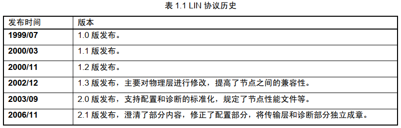
图 1.1 为 LIN 在汽车中的应用，主要用于车身系统。
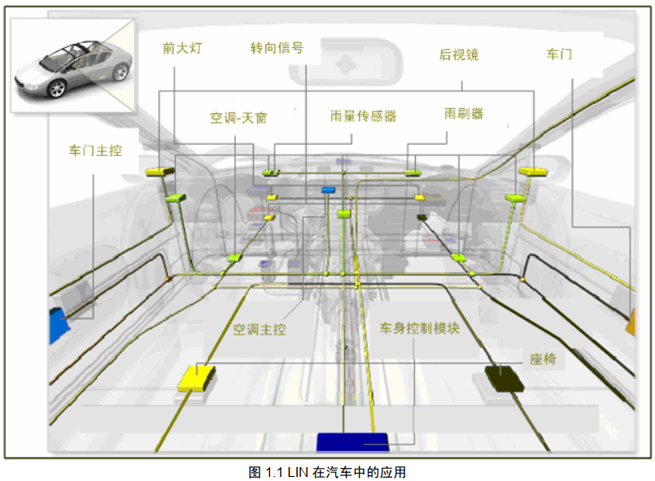
LIN 子网(Cluster)与节点(Node)¶
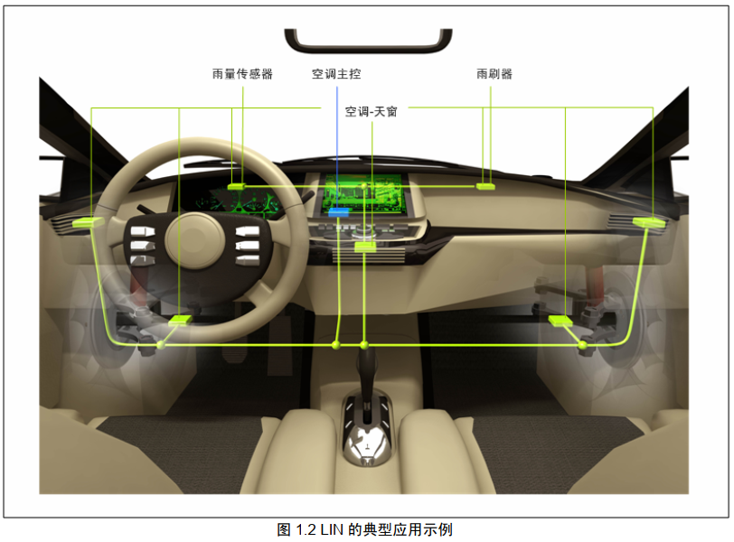
图 1.2 为一典型的车载 LIN 通信子网(注 1)，黄色方块为 LIN 的从机节点，蓝色方块为 LIN 的主机节点，一个节点即一个 LIN 接口(注 2)。 LIN 网络与主干线 CAN(Controller Area Network，控制器局域网)总线相连时，需要加入 CAN-LIN 网关，一般由主机节点来充当。 LIN 与上层网络相连时的示意图参照图 1.3。
Note
- 由于 LIN 网络在汽车中一般不独立存在，经常与上层网络(如 CAN)相连，因此子网的概念是相对于上层网络而言。在不强调与上层网络相连的情况下，后面也称作 LIN 网络。
- 一个节点不一定对应一个 ECU(Electronic Control Unit，电子控制单元)，因为一个 ECU 可能提供多个 LIN 接口，并且这些接口可能连接到不同的 LIN 通信子网中。
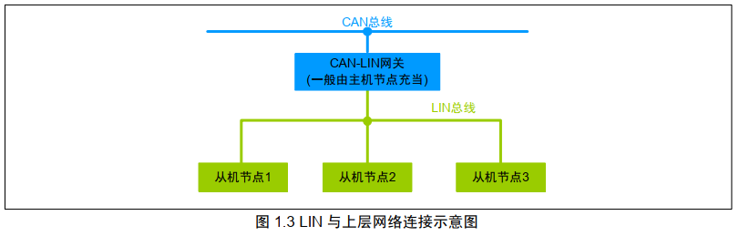
节点可以抽象为如图 1.4 所示。
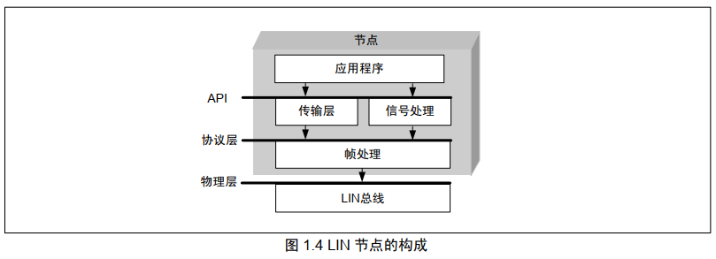
节点应用层向下层传输信号和消息。信号和消息位于帧中的数据段，是节点向其他节点传达的实质信息。它们之间的区别在于信号封装于信号携带帧 (帧 ID 范围在 0x00～0x3B 之间，参照 3.1.3 节表 3.1)中，用于在运行状态传递上层发生的事件，如温度传感器的测量结果等。消息封装于诊断帧(帧 ID 为 0x3C 或 0x3D， 参照 3.1.3 节表 3.1)中，是有固定格式、最大长度不超过 4095 字节的信息，例如后面介绍的服务请求。应用程序通过信号处理实现信号的传递，通过传输层实现消息的传递。
主/从机节点与主/从机任务¶
LIN 的拓扑结构为单线总线，应用了单一主机多从机的概念。总线电平为 12V，传输位速率(Bitrate)最高为 20kbps。由于物理层限制，一个 LIN 网络最多可以连接 16 个节点，典型应用一般都在 12 个节点以下，主机节点有且只有一个，从机节点有 1 到 15 个。
主机节点(Master Node)包含主机任务(Master Task)和从机任务(Slave Task)，从机节点(Slave Node)只包含从机任务，如图 1.5 所示。
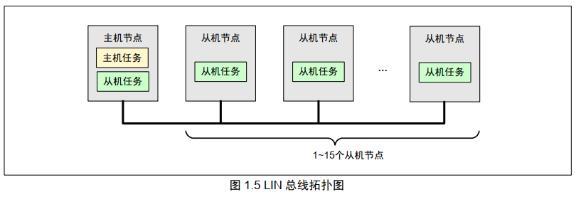
主机任务负责：
- 调度总线上帧的传输次序；
- 监测数据，处理错误；
- 作为标准时钟参考；
- 接收从机节点发出的总线唤醒命令。
从机任务不能够主动发送数据，需要接收主机发送的帧头(帧的起始部分，参照 3.1 节的图 3.1)，根据帧头所包含的信息(这里指帧 ID，详细内容参照 3.1.3 节)判断：
- 发送应答(帧中除帧头外剩下的部分，参照 3.1 节的图 3.1)；
- 接收应答；
- 既不接收也不发送应答。
LIN 的特点¶
LIN 具有以下特点：
- 网络由一个主机节点和多个从机节点构成。
- 使用 LIN 可以大幅度的削减成本，表现在以下方面：
- 开放型规范：规范可以免费从官方网站获得。
- 硬件成本削减：基于普通 UART/SCI 接口的低成本硬件实现，无需单独的硬件模块支持；从机节点无需高精度时钟就可以完成自同步；总线为一根单线电缆。
- 装配成本削减： LIN 采用了工作流(Work Flow)和现成节点(Off-the-shelf Node)的概念，将网络装配标准化，并可通过 LIN 传输层进行再配置。
- 缩短软件开发周期： LIN 协议将 API(Application Programming Interface，应用编程接口)标准化。
- 信号传输具有确定性，传播时间可以提前计算出，参照 3.1.6 节。
- LIN 具有可预测的 EMC(ElectroMagnetic Compatibility，电磁兼容性)性能，参照 4.7 节。为了限制 EMI(ElectroMagnetic Interference，电磁干扰)强度， LIN 协议规定最大位速率为 20kbps。
- LIN 提供信号处理、配置、识别和诊断四项功能，参照 5.2.1 节的图 5.2。
LIN 协议层¶
本章内容介绍了帧、进度表、主/从机的状态机实现、 LIN 网络的休眠(Sleep)/唤醒(Wakeup)和状态管理等，对应着 LIN 规范的以下部分：
- LIN Protocol Specification
帧的结构¶
帧(Frame)包含帧头(Header)和应答(Response)两部分。主机任务负责发送帧头；从机任务接收帧头并对帧头所包含信息进行解析，然后决定是发送应答，还是接收应答，还是不作任何反应。帧在总线上的传输如图 3.1 所示。
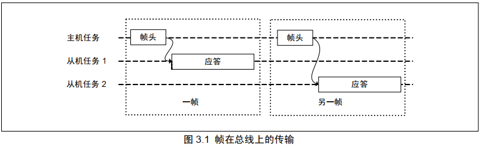
帧头包括同步间隔段、同步段以及 PID(Protected Identifier，受保护ID)段，应答包括数据段和校验和段，如图 3.2 所示，其中值“0”为显性电平(Dominant)，值“1”为隐性电平(Recessive)，总线上实行“线-与”： 当总线上有大于等于一个节点发送显性电平时，总线呈显性电平；所有的节点都发送隐性电平或不发送信息(不发送任何信息时总线默认呈隐性电平)时，总线才呈现隐性电平，即显性电平起主导作用。图中帧间隔为帧之间的间隔；应答间隔为帧头和应答之间的间隔；字节间间隔包括同步段和受保护 ID 段之间的间隔、数据段各字节间之间的间隔以及数据段最后一个字节和校验和段之间的间隔。下面对帧头和应答的各部分进行详细说明。
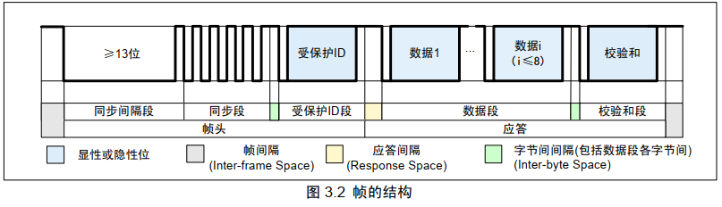
同步间隔段(Break Field)¶
同步间隔段由同步间隔(Break)和同步间隔段间隔符(Break Delimiter)构成，如图3.3所示。同步间隔是至少(注1)持续 13 位(以主机节点的位速率为准)的显性电平，由于帧中的所有间隔或总线空闲时都应保持隐性电平，并且帧中的任何其它字段都不会发出大于 9 位的显性电平，因此同步间隔可以标志一个帧的开始。同步间隔段的间隔符是至少持续 1 位的隐性电平。
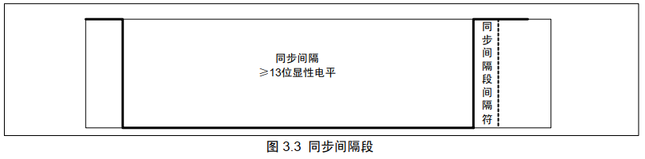
从机任务接收帧头的同步间隔段时，以该从机任务所在节点的位速率为准，当检测总线上出现持续 11 位(注2)的显性电平时，认为是帧的开始。当从机节点使用精度较高的时钟时，识别阈值可以选择 9.5 位(注 3)。
协议没有规定同步间隔段的发送和检测方法。
Note
- 发送显性电平的下限为 13 位，上限应保证帧的最大传输时间THeader_Maximum(参照 3.1.6 节)在规定范围之内。
- 参照 4.6 节的表 4.3，当从机节点选择的时钟(精度不高的时钟)在容限范围内(±14%)时， (13 - 11.18) / 13 = 14%，即是说当处于最差情况下(时钟相差 14%)时，从机任务按照自身时钟测量的主机节点发送的 13 位显性电平不会低于 11.18 位，若识别阈值高于 11.18 位，那么当选用 14%的时钟时，就会出现主机发送同步间隔，而从机检测不到的情形。由于在除同步间隔段以外，帧中任何其余部分都不会发送超过 9 位的显性电平(可以参照本章后面几节的内容)， (10.26 - 9) / 9 = 14%，即是说判断阈值必须大于 10.26 位，否则可能把帧中其余部分误判作为同步间隔段。综上，识别阈值为 11 位显性电平。
- 参照 4.6 节的表 4.3，当从机节点选择的时钟(精度较高的时钟)在容限范围内(±1. 5%)时，按照上面注 2 的计算，识别阈值应在 9.135 位(由(9.135 - 9) / 9 = 1.5%计算而来)到 12.805 位(由(13 – 12.805) / 13 = 1.5%计算而来)之间。 具体设定阈值会随着所选时钟的精度， 取值范围在 9.135 位到 12.805 位之间浮动。
同步段(Sync Byte Field)¶
在介绍同步段之前，首先介绍一下字节域(Byte Field)的概念，字节域包括 1 位起始位(Start Bit，显性) + 8 位数据位 + 1 位停止位(Stop Bit，隐性)，是一种标准 UART 数据传输格式，如图 3.4 所示。在 LIN 的一帧当中，除了上一节讲述的同步间隔段，后面的各段都是通过字节域的格式传输的。在 LIN 帧中，数据传输都是先发送 LSB(Least Significant Bit，最低有效位)，最后发送 MSB(Most Significant Bit，最高有效位)。
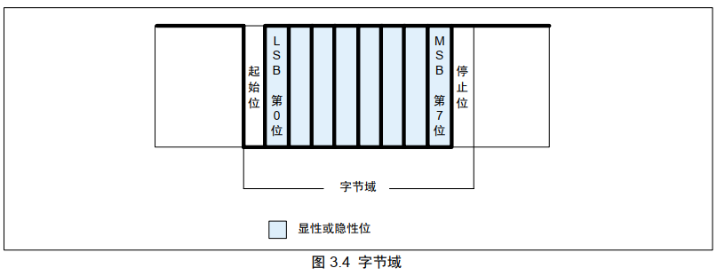
LIN 同步以下降沿为判断标志，采用字节 0x55(转换为二进制为 01010101b)。同步段的字节域如图 3.5 所示。
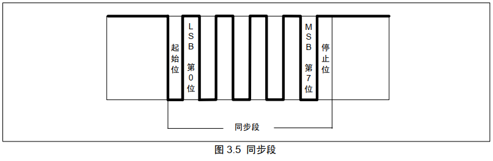
从机节点可以不采用精度高的时钟，而采用片上振荡器等精度和成本相对较低的时钟，由此带来的与主机节点时钟产生的偏差，需要通过同步段进行调整，调整的结果是使从机节点数据的位速率与主机节点一致。同步段用于同步的基准时钟为主机节点的时钟。从机节点通过接收主机节点发出的同步段，计算出主机节点位速率，根据计算结果对自身的位速率重新作调整。计算公式如下：
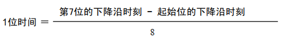
通过计算，可以得到主机节点实际传输 1 位所用的时间，即位速率。
受保护ID段(Protected Identifier Field)¶
受保护 ID 段的前 6 位叫作帧 ID(Frame ID)，加上两个奇偶校验位后称作受保护 ID。如图 3.6 所示。
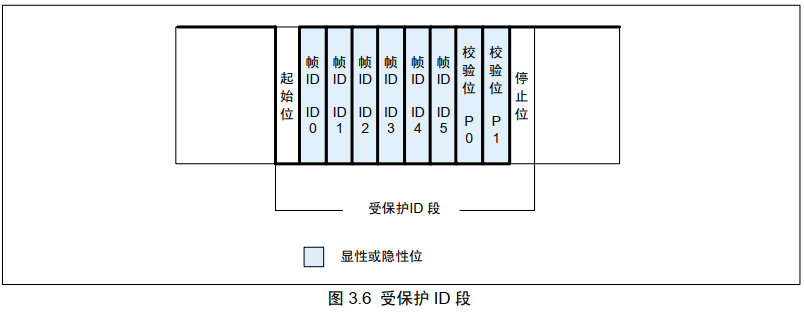
帧 ID 的范围在 0x00～0x3F 之间，共 64 个。帧 ID 标识了帧的类别和目的地。从机任务对于帧头作出的反应(接收/发送/忽略应答部分)都是依据帧 ID 判断的。如果帧 ID 传输错误，将会导致信号无法正确到达目的地，因此引入奇偶校验位。校验公式如下，其中“⊕”代表“异或”运算， “¬”代表“取非”运算。
P0 = ID0 ⊕ ID1 ⊕ ID2 ⊕ ID4
P1 = ¬(ID1 ⊕ ID3 ⊕ ID4 ⊕ ID5)
由公式可以看出， PID 不会出现全 0 或全 1 的情况，因此，如果从机节点收到了“0xFF”或“0x00”，可判断为传输错误。
依据帧 ID 不同将帧进行分类，如表 3.1 所示，对各种类型的详细说明参照 3.2 节。
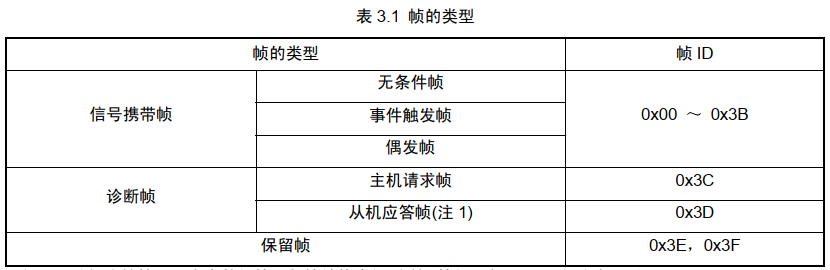
Note
- 从机应答帧是一个完整的帧，与帧结构中的“应答”(帧的一部分)不同，注意区别。
数据段(Data Field)¶
节点发送的数据位于数据段，包含 1 到 8 个字节(注 1)，先发送编号最低的字节 DATA1，编号依次增加，如图 3.7 所示。
数据段包含了两种数据类型，信号(Signal)和诊断消息(Diagnostic messages)。
信号(Signal)由信号携带帧传递，一个帧 ID 对应的数据段可能包含一个或多个信号。信号更新时要保证其完整性，不能只更新一部分。一个信号通常由一个固定的节点发出，此节点称为该信号的发布节点(Publisher)；其余的一个或多个节点接收，它们称为信号的收听节点(Subscriber)(注 2)。
诊断消息(Diagnostic message)由诊断帧传递，对消息内容的解析由数据自身和节点状态决定。
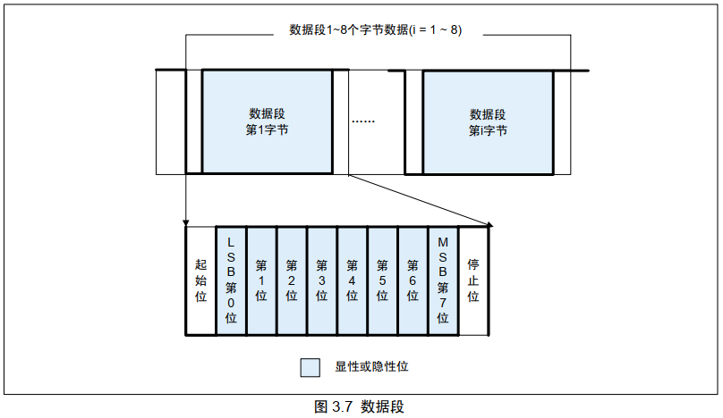
Note
- 协议没有规定帧中的哪一部分显示数据长度码的信息，数据的内容和长度是由系统设计者根据帧 ID 事先约定好的。
- 总线上的数据是以广播形式被发送到总线上的，任何节点均能接收，但并非所有信号对每个节点都有用。收听节点接收帧的应答是因为该节点的应用层会使用这些信号，而对于其余节点，由于用不到这些信号，所以没有必要作接收处理，将忽略帧的应答部分。发布和收听由哪个节点进行完全根据应用层的需要由软件或配置工具实现。一般情况下，对于一个帧中的应答，总线上只存在一个发布节点，否则就会出现错误。事件触发帧例外，可能存在零个、一个或多个发布节点，参照 3.2.2 节。
校验和段(Checksum Field)¶
校验和段是对帧中所传输的内容进行校验，如图 3.8 所示。
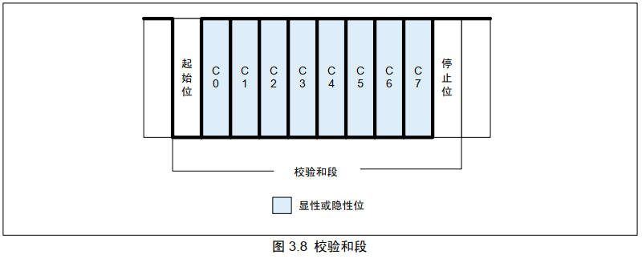
校验和分为标准型校验和(Classic Checksum)及增强型校验和(Enhanced Checksum)，如表 3.2 所示。
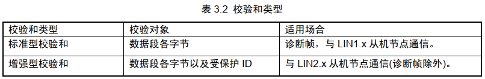
采用标准型校验和还是增强型校验和由主机节点管理，发布节点和各收听节点根据帧 ID 来判断采用哪种校验和。
校验方法为将校验对象的各字节作带进位二进制加法(每当结果大于等于 256 时就减去 255)，并将所得最终的和逐位取反，以该结果作为要发送的校验和。接收方根据校验和类型，对接收数据作相同的带进位二进制加法，最终的和不取反，并将该和与接收到的校验和作加法，如果结果为 0xFF，则校验和无误，这在一定程度上保证了数据传输的正确性。
例如：采用标准型校验和， Data1 = 0x4A， Data2 = 0x55， Data3 = 0x93， Data4 = 0xE5，计算方法如表 3.3 所示：
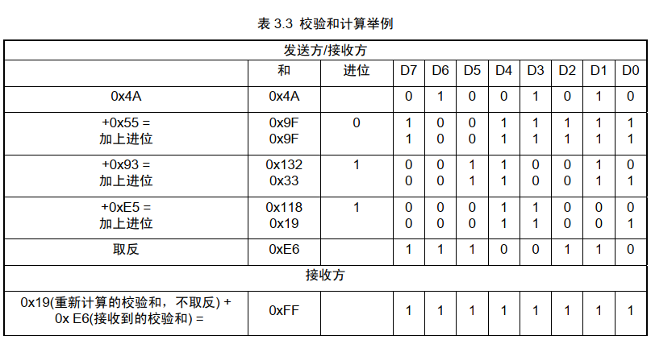
帧传输时间的计算¶
帧(有关帧的结构参照 3.1 节的图 3.2)在总线上传输的时间计算如表 3.4 所示。其中， TFrame_Maximum为帧在总线上传输的最大时间； THeader_Maximum为帧头在总线上传输的最大时间； TResponse_Maximum为应答在总线上传输的最大时间； THeader_Nominal为帧头额定传输时间：同步间隔段(包含同步间隔和同步间隔段间隔符)的最小传输时间 + 同步段传输时间 + 受保护ID段传输时间；帧头的余量THeader_Rest包含字节间间隔，规定为帧头额定传输时间的 0.4 倍； TResponse_Nominal为应答额定传输时间：数据段传输时间 + 校验和段传输时间；应答的余量TResponse_Rest包含应答间隔以及字节间间隔，规定为应答额定传输时间的 0.4 倍； Ndata表示数据段包含N个字节。
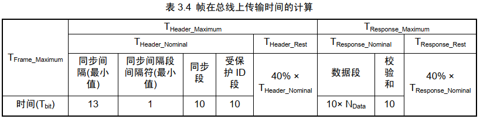
帧在总线上的传输波形¶
帧在总线上的传输波形示例如图 3.9 所示。
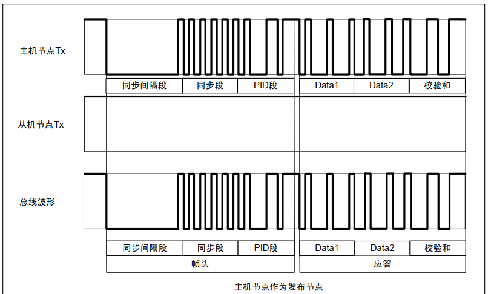
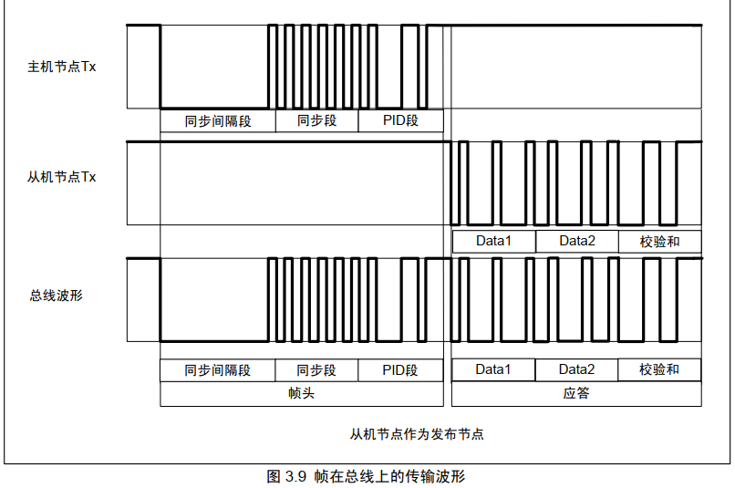
帧的类型¶
下面对 3.1.3 节表 3.1“帧的类型”中各种帧进行详细说明。
无条件帧(Unconditional Frame)¶
无条件帧是具有单一发布节点，无论信号是否发生变化，帧头都被无条件应答的帧。
无条件帧在主机任务分配给它的固定的帧时隙(参照 3.3 节)中传输。总线上一旦有帧头发送出去，必须有从机任务作应答(即无条件发送应答)，如图 3.10 所示，其中列出的帧 ID 的值只是为了举例说明，协议并未强制规定。
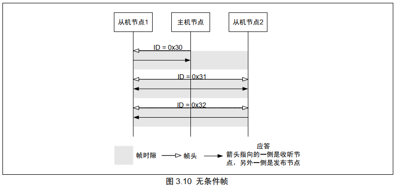
帧 ID = 0x30 应答部分的发布节点为从机节点 1，收听节点为主机节点。典型应用如从机节点 1 向主机节点报告自身某信号的状态。
帧 ID = 0x31 应答部分的发布节点为主机节点，收听节点为从机节点 1 和从机节点 2。典型应用如主机节点向从机节点发布信息。
帧 ID = 0x32 应答部分的发布节点为从机节点 2，收听节点为从机节点 1。典型应用如从机节点之间彼此通信。
事件触发帧(Event Triggered Frame)¶
事件触发帧是主机节点在一个帧时隙(参照 3.3 节)中查询各从机节点的信号是否发生变化时使用的帧，当存在多个发布节点时，通过冲突解决进度表(参照 3.3 节)来解决冲突。
当从机节点信号发生变化的频率较低时，主机任务一次次地轮询各个信号会占用一定的带宽。为了减小带宽的占用，引入了事件触发帧的概念。
事件触发帧的典型应用就是轮询四个车门的开关情况。与其利用无条件帧每个车门轮询一遍，不如同时对四个车门进行询问，如果其中一个车门打开了(事件发生)，该车门要对询问作应答，即事件触发的含义。这样做可以减小带宽，但同时会导致两种现象，其一就是没有车门被打开，即无节点应答——事件触发帧允许一帧中只有帧头无应答；另外一种情况就是冲突，即同时有大于等于两个车门被打开，对该问题同时作答——事件触发帧允许两个以上的节点对帧头作应答而不视为错误。当发生冲突时，主机节点需要重新作轮询，这样会增加一些响应时间，但由于事件触发帧本身就用来处理低概率事件，总的来说还是节省了带宽。
原先用作轮询的无条件帧，称为与该事件触发帧关联的无条件帧，即事件触发帧的应答部分是与其关联的无条件帧所提供的应答。当发生冲突时，需要立刻中断当前的进度表(参照 3.3 节)，启动冲突解决进度表(Collision Resolving Schedule)，重新调用这些关联的无条件帧。其中，冲突解决进度表要求包含所有的关联的无条件帧。图 3.11 示例描述了事件触发帧的传输状况。事件触发帧的帧 ID 为 0x10，与其关联的两个无条件帧的帧 ID 分别是 0x11 和 0x12，这些帧 ID 的值只是为了举例说明，协议并未强制规定。
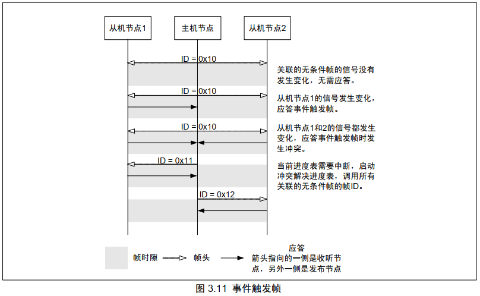
与事件触发帧关联的多个无条件帧需要满足以下 5 个条件：
- 数据段包含的数据字节数等长；
- 使用相同的校验和类型；
- 数据段的第一个字节为该无条件帧的受保护 ID，这样才能够知道应答是哪个关联的无条件帧发送出来的；
- 由不同的从机节点发布；
- 不能与事件触发帧处于同一个进度表(参照 3.3 节)中。
偶发帧(Sporadic Frame)¶
偶发帧是主机节点在同一帧时隙(参照 3.3 节)中当自身信号发生变化时向总线启动发送的帧。当存在多个关联的应答信号变化时，通过事先设定的优先级来仲裁。
与事件触发帧一样，偶发帧的应答也关联了一组无条件帧。规定偶发帧只能由主机节点作为发布节点。偶发帧的传输可能出现三种状况：
- 当关联的无条件帧没有信号发生变化时，该时隙(参照 3.3 节)保持沉默，如图3.12 第一个帧时隙所示，主机节点连帧头都不需要发送；
- 当其中一个关联的无条件帧包含的信号发生了变化，则发送该关联的无条件帧的应答部分；
- 如果有两个或两个关联的无条件帧包含的信号发生了变化，则按照事先规定好的优先级，优先级较高的关联的无条件帧获得发送权，优先级较低的要等到下一个偶发帧的帧头到来时才能发送应答。由于主机节点是唯一的发布节点，所以主机节点事先就知道各个关联信号的优先级别，这样在传输时就不会产生冲突。
引入偶发帧的目的在于为进度表(参照 3.3 节)增加一些动态特性——当主机节点的信号发生变化时才有通信发生。事件触发帧和偶发帧反映了帧在不同时机(信号变化或未发生变化)的传输状况，引入它们的目的是为了增加通信的灵活性。
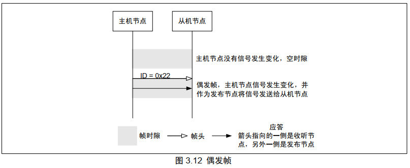
诊断帧(Diagnostic Frame)¶
诊断帧包括主机请求帧和从机应答帧，主要用于配置、识别和诊断用。主机请求帧(Master Request Frame，MRF)，帧 ID = 0x3C，应答部分的发布节点为主机节点；从机应答帧(Slave Response Frame， SRF)，帧 ID = 0x3D，应答部分的发布节点为从机节点。数据段规定为 8 个字节，一律采用标准型校验和。
保留帧(Reserved Frame)¶
保留帧的帧 ID 为 0x3E 和 0x3F，为将来扩展用。
进度表(Schedule)¶
进度表是帧的调度表，规定总线上帧的传输次序以及各帧在总线上的传输时间。进度表位于主机节点，主机任务根据应用层需要进行调度。进度表可以有多个，一般情况下，轮到某个进度表执行的时候，从该进度表规定的入口处开始顺序执行，到进度表的最后一个帧时，如果没有新的进度表启动，则返回到当前的进度表第一个帧循环执行；也有可能在执行某个进度表当中发生中断，执行另一个进度表后再返回，如事件触发帧的冲突解决过程就是一个典型的例子，如图 3.13 所示。
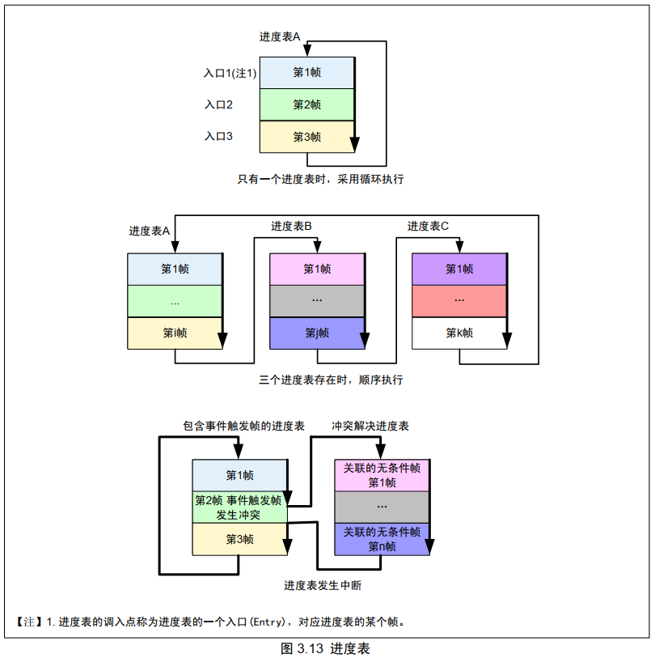
进度表除规定了帧 ID 的传输次序外，还规定了帧时隙(Frame Slot)的大小。帧时隙是进度表规定的一个帧的帧头起始到下一个的帧的帧头起始的时间。每个帧的帧时隙都可以不同，一个帧时隙对应了进度表的一个入口，如图 3.14 所示，其中 i = 1～8。
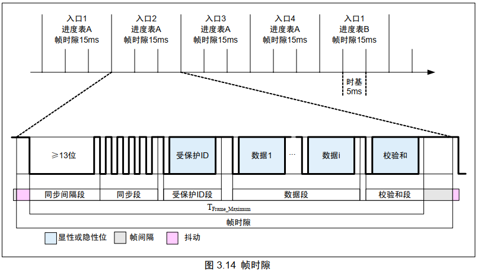
其中TFrame_Maximum为帧在总线上传输的最大时间，参照 3.1.6 节的表 3.4。抖动(Jitter)为帧的同步间隔段的下降沿与帧时隙起始时刻相差的时间。时基(Time Base)为LIN子网的最小计时单位，通常设定为 5ms或 10ms。帧时隙必须为时基的整数倍，并且起始于时基的开始时刻(称为时基的节拍(Tick))，切换到另外一个进度表时一定要等到当前帧时隙的结束。
状态机(State Machine)实现¶
主机任务的状态机¶
当进度表启动后，主机任务依次发送同步间隔段、同步段和受保护 ID 段，如图 3.15 所示。
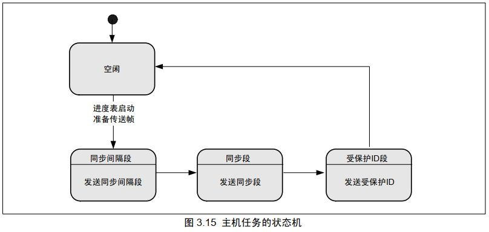
从机任务的状态机¶
从机任务负责发布或者接听帧的应答。包括两个状态机：
- 同步间隔段和同步段检查器
- 帧处理器
从机任务状态机如表 3.5 所示，其中帧处理的状态机如图 3.16 所示。
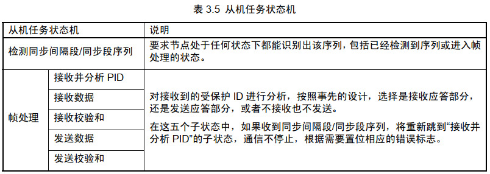
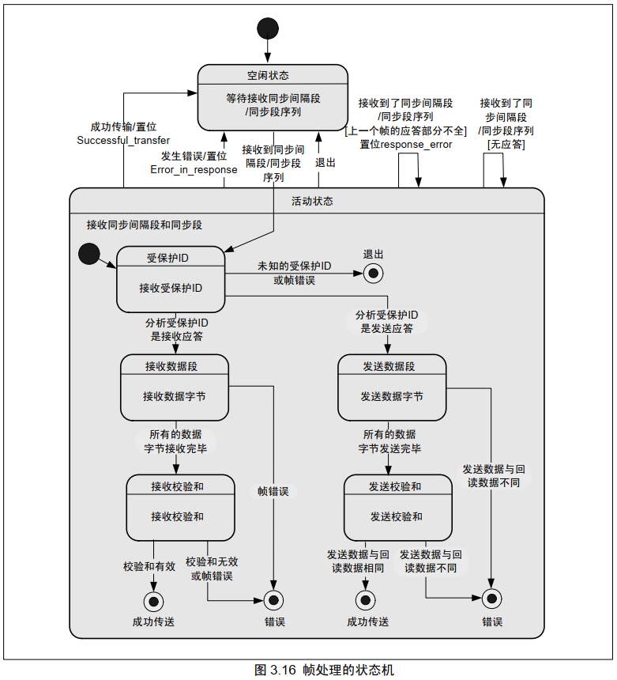
网络管理¶
网络管理主要指的是网络的休眠和唤醒管理，如图 3.17 所示。
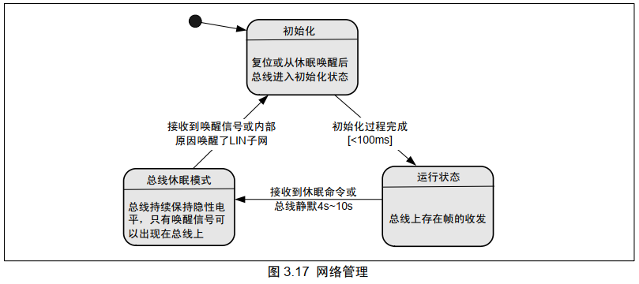
唤醒¶
当总线处于休眠状态时，主/从机节点都可以向总线上发送唤醒信号，唤醒信号持续 250μs～5ms。其余节点(除发送唤醒信号以外的节点)以大于 150μs 为阈值判定唤醒信号。每个从机节点必须在唤醒信号显性脉冲的结束处算起 100ms 以内准备接收来自主机的命令(帧头)；主机节点也必须被唤醒， 100ms 之内主机节点发送帧头开始通信。主机节点的同步间隔段也可以充当唤醒信号，由于从机节点需要作初始化处理，因此主机节点所发的这个帧有可能不会被正常接收。
如果节点发送出唤醒信号后，在 150ms～250ms 之内没有接收到总线上的任何命令(帧头)，则可以重新发送一次唤醒信号。唤醒信号最多可以发送 3 次， 3 次之后，必须等待至少 1.5s 之后才可以再次发送唤醒信号，如图 3.18 所示。
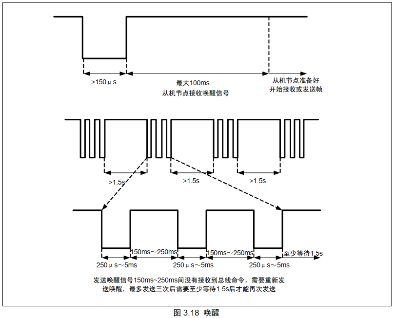
休眠¶
总线可以在两种情况下进入休眠：
(1) 利用诊断帧中的主机请求帧 0x3C 作休眠命令，要求数据段的第一个字节为 0x00，其余字节为 0xFF。
休眠命令由主机节点发出，总线上的从机节点只判断数据段的第一个字节，其余字节忽略。从机节点在接收到休眠命令后，不一定要进入低功耗模式，根据应用层需要设置，如图 3.19 所示。
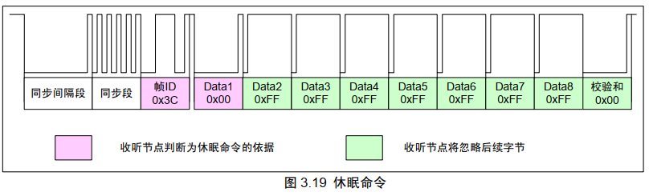
(2) 当总线静默(没有显性和隐性电平之间的切换)4s～10s 时，节点自动进入休眠状态。
状态管理¶
状态管理是为了检测运行中的错误。错误一旦被发现，根据设计需要采取不同的措施进行排除，一种方法是简单替换掉错误节点，另一种方法是让发生问题的节点进入到自我保护/安全模式(Limp Home Mode)。
网络报告¶
协议强制规定，每个从机节点都要在它发布的某个无条件帧中包含一个长度为一位的标量信号 response_error，向主机节点报告自身状态。主机节点负责接收这个信号并且执行分析，如表 3.6 所示。事件触发帧由于允许总线冲突，需特殊处理。
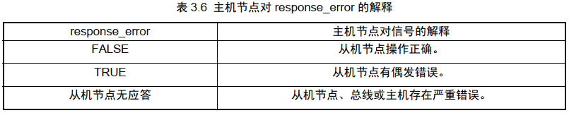
LIN 协议并没有标准化错误类型，用户可根据需要自行制定。表 3.7 列出了可能出现的一些错误类型供参考。
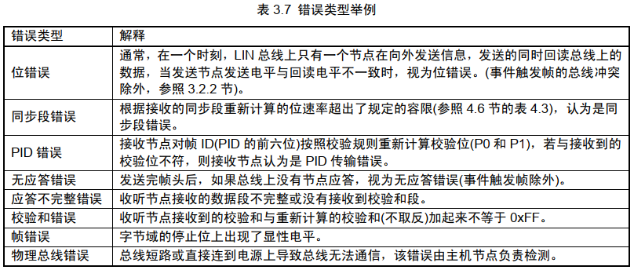
节点内部报告¶
节点自身需要设定两个状态位： Error_in_response 和 Successful_transfer。当发送或接收应答的时候发现错误，将置位 Error_in_response；成功传输则置位 Successful_transfer。节点需要将这两个状态位报告给应用层。
帧收发的硬件实现¶
本章着重介绍与 LIN 帧收发相关的硬件的组成、特点以及应用设计时的注意事项。本章内容对应着 LIN 规范的以下部分：
- LIN Protocol Specification(部分内容)
- LIN Physical Layer Specification
组成¶
收发 LIN 帧需要的硬件包括协议控制器(Protocol Controller)、总线收发器(Bus Transceiver)和 LIN 总线三部分，如图 4.1 所示。
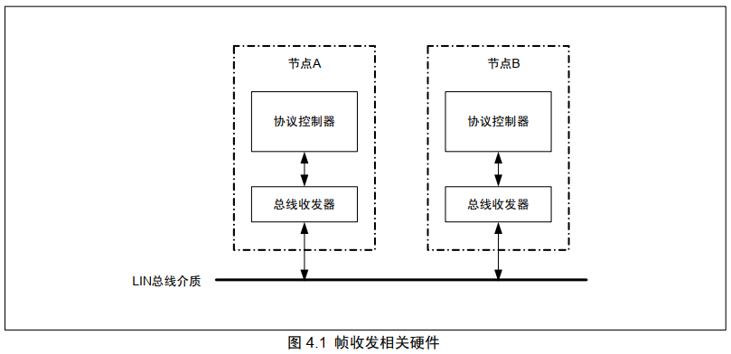
LIN 规范并未限定传输介质的类型和连接器的规格。目前 LIN 网络主要使用铜线作为传输介质，针对铜线的总线收发器也是市场主流。鉴于这种情况，下文如无特别说明，均是针对铜线介质展开。
LIN 的硬件特点¶
- 单线通信
- 从机节点无需高精度时钟源
- EMI 低而且可控
- 最高通信速率 20kbps
协议控制器¶
协议控制器的主体是一个基于 UART/SCI 的通信控制器，工作方式是半双工。协议控制器既可以使用专用模块实现，也可以用“UART/SCI+定时器”实现。发送时，协议控制器把二进制并行数据转变成高-低电平信号，并按照规定的串行格式(8 数据位， 1 停止位，无校验位)送往总线收发器；接收时，协议控制器把来自总线收发器的高-低电平信号按照同样的串行格式储存下来，然后再将储存结果转换成二进制并行数据。
协议控制器要能产生和识别帧的同步间隔段。如前所述，同步间隔段包含一个低电平脉冲，长度至少为 13 位。发出和识别同步间隔段虽然增加了硬件设计的复杂度，但是从接收方的角度看，这样做能把同步间隔段与普通的数据字节区别开，确保了同步信息的特殊性。
协议控制器要能执行本地唤醒(Local Wakeup)。需要唤醒总线时，协议控制器通过总线收发器向 LIN 总线送出唤醒信号(参照 3.5.1 节)。
协议控制器要能识别总线唤醒(Bus Wakeup)。当收到来自 LIN 总线的唤醒信号时，协议控制器能够正确动作，进入规定的通信状态(注 1)。
Note
- 例如，主机节点延迟 100ms，然后查询唤醒来源。
实现方案¶
依据硬件资源不同可以分为 3 类： UART/SCI+定时器+外部中断、硬件 LIN(Hardware LIN)和 LIN 模块(LIN Module)，分别面向对成本和性能有不同侧重的应用。
总线收发器¶
总线收发器的主体是一个双向工作的电平转换器，完成协议控制器的高-低电平与 LIN 总线的隐性-显性电平(注 1)之间的转换。显性-隐性电平的定义如表 4.2 所示。
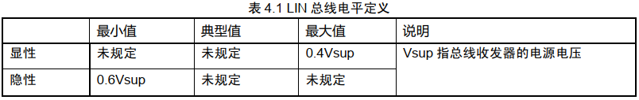
LIN 规范规定： LIN 总线的电平参考点是总线收发器的电源参考点。为了克服电源波动和参考点漂移的影响， LIN 规范要求总线收发器要能承受±11.5%的电源波动和参考点电平波动，并且能承受电源和参考点之间 8% 的电位差波动。收发双方的电平鉴别门限也设置了较大的冗余度。
总线收发器还包括一些附加的功能，例如总线阻抗匹配、压摆率(Slew-rate)控制等。
此外， LIN 规范要求总线收发器具备这样一种特性：本地节点掉电或工作异常时，不能影响总线上其他节点工作。
Note
- “显性-隐性”此处有两个含义，一是突出 LIN 总线“线-与”的本质，二是与协议控制器的“高-低电平”相区别。
实现方案¶
在一些要求不高的场合，可以采用简单的收发器电路，如图 4.2 所示。
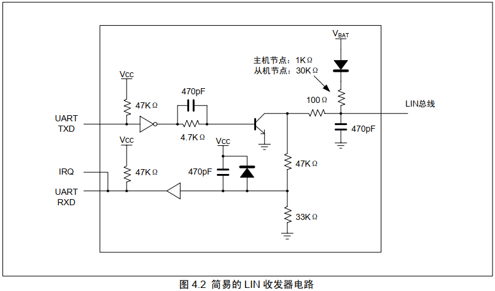
不少半导体厂商提供集成化的总线收发器，这些产品功能完善，环境适应能力强，设计产品时建议优先考虑。
LIN 总线¶
LIN 总线是衔接所有 LIN 节点的通信介质。
LIN 总线的特征阻抗——尤其是容抗——会影响信号的波形，在设计产品时应予以重视，参照 4.8.2 节。
为汽车电子产品增加 LIN 功能所花费的成本与获得的灵活性相比，往往后者更为显著。汽车上大多数传感器、执行器除至少要接 1 根电源线和 1 根地线外，此外还有一些模拟/数字信号线，这些接口往往存在兼容性的问题。如果采用 LIN 规范，仅用 3 根线(电源、地和 LIN)就可以实现标准化的数字接口。传感器、执行器通过总线连接，汽车结构设计可以更加灵活，线束的数量(重量)不但不会增加，还可能减少。
时钟源¶
LIN 网络的主机节点必须设置较高精度的时钟，而从机节点则不必。换句话说，主机节点是 LIN 网络的时间基准，这保证了位速率的准确性。 LIN 规范规定一个 LIN 网络里只有一个主机节点，这保证了位速率的唯一性。 LIN 规范规定所有通信都由主机节点发起，并在帧头中加入同步段，这就给从机节点提供了主机节点位速率的信息。只要所有从机节点都能在 LIN 通信时与主机节点采用同样的位速率， LIN 网络就能正常工作。这种做法虽然降低了传输效率，但是一方面减少了高精度时钟数量，降低了成本；另一方面不需要仲裁，降低了软硬件设计复杂度。
主机节点、从机节点位速率要满足表 4.3 的要求。
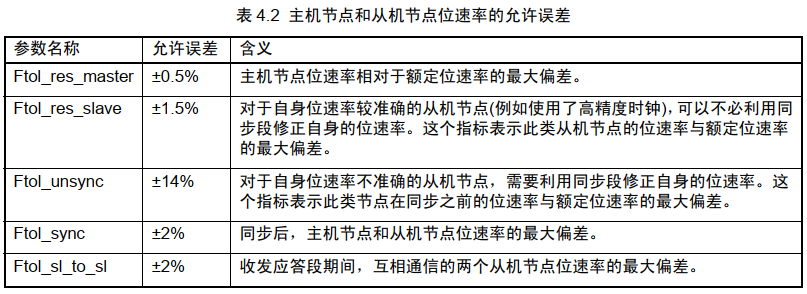
对表 4.3 的参数说明如下：
- 主机节点、从机节点的位速率必须在使用环境要求的温度范围和电压范围内，优于规定的精度(主机节点是±0.5%，从机节点是±14%)。
- 同步之前，主机和从机节点的位速率与额定位速率的误差应符合 Ftol_res_master 和 Ftol_res_slave/Ftol_unsync 的要求。主机节点按主机位速率发出同步间隔段，从机节点应可按从机位速率将其解释为长度大于 9～11 位的显性电平(这个宽度必须是帧的其他部分不可能出现的)。这里除了要考虑从机节点对时间的测量误差(取决于时钟精度)，还要考虑从机节点可用位速率与额定位速率的误差，以及 LIN 总线电抗特性造成的传输延迟(固有误差，取决于硬件设计)。
- 同步之后，从 PID 段到校验和段，通信双方的位速率相对误差不大于±2%(即Ftol_sync 和 Ftol_sl_to_sl)。如果是主机节点与从机节点通信，设 Ftol_res_master 为±0.5%，那么不论从机节点是否利用同步段修正位速率，其位速率相对于额定位速率的误差不能大于 Ftol_sync - Ftol_res_master，即±1.5%。如果是从机节点之间通信，对从机节点各自的位速率误差的要求将高于±1.5%。
EMI 及其控制¶
EMI 这里指电磁干扰。对于 LIN 而言， EMI 主要由位速率和压摆率共同决定。位速率决定单位时间内电平变化次数，压摆率决定电平跳变的快慢。单位时间内跳变次数越多，每次跳变持续时间越短，跳变过程包含的谐波成分就越丰富， EMI 也越大；相反，跳变持续时间越长，单位时间跳变次数越少，其谐波成分越少， EMI 也较低。
LIN 可以控制 EMI。这是因为协议控制器可以控制 LIN 总线位速率，总线收发器可以控制压摆率。另外，LIN 协会把 LIN 的最高位速率限制在 20kbps。值得一提的是，这个速度远非 LIN 物理层的极限，而是在数据速率与 EMI 之间权衡的结果。
设计电路时的注意事项¶
工作环境对时钟的影响¶
片上振荡器容易受到环境温度和电源电压的影响，石英晶体容易受到冲击振动的破坏。在选择时钟源时，一定要考虑使用环境的温度范围、电源电压范围和冲击振动情况。在电路板布局时，要让时钟器件尽量避开热源和易受外力冲击的部位。总之，要确保在最恶劣的情况下，也能保证时钟的精度和稳定性。
LIN 的硬件部分应该在-40℃~+125℃的温度范围内保证满足 LIN 规范规定的指标。在电源适应性方面，要能承受±11.5%(注 1)的电压波动。对于汽车电子产品，还要承受汽车电源系统常见的总线短路、负载突降(Load Dump)、电源反接、蓄电池串联(Jump-start)等现象。
Note
- LIN 规范 2.1 版将这个指标提高到±11.5%， LIN 规范 1.x 和 2.0 版中，这个指标是±10%。
端接阻抗和总线负载¶
为了实现“线-与”特性， LIN 规范规定了主机节点和从机节点的端接电阻，如表 4.4 所示。端接电阻一端连接 LIN 总线，另一端经串联二极管连接收发器电源，如图 4.3 所示。图中的串联二极管是必须的，当 ECU 的“电池断路”的时候，它可以防止 LIN 总线向 ECU 供电。
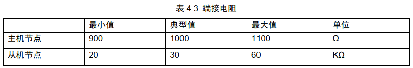
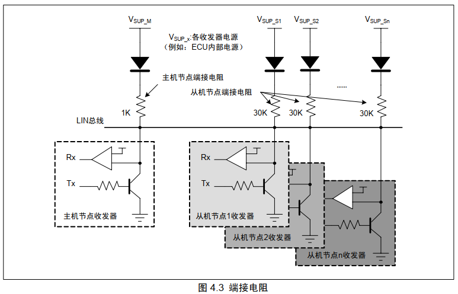
LIN 子网各节点并联在一起，构成如图 4.4 所示的等效电路。其中，总线负载电阻等于各节点端接电阻的并联等效电阻(总线的电阻通常很小，可以忽略)，总线负载电容等于各节点输入电容和总线分布电容的并联等效电容。总线电阻决定了总线收发器驱动级的功率和通信期间的功耗；总线电容可以很好地吸收周围环境的噪声干扰。总线电阻和总线电容构成的 RC 滤波器还有助于控制压摆率。
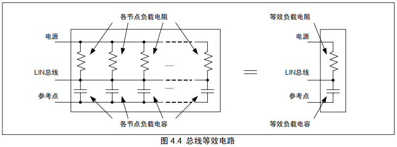
为确保最恶劣情况下正常通信的需要， LIN 规范除了限制节点的端接电阻、电容和时间常数，还规定 LIN 总线长度不超过 40 米，一个 LIN 网络的最大节点数目不超过 16。
应注意，由于端接电阻连接着电源和 LIN 总线，当出现 LIN 总线对地短路时，如果不采取保护措施，会有较大的电流流过端接电阻，产生显著的功耗。
ESD 防护¶
ESD(Electrostatic Discharge)指静电危害，表现为短暂而幅度迅速衰减的高压、大电流放电，由于其瞬间电压可达数千伏，对于工作在干燥的环境或者接地不良的电子产品威胁最严重。
总线收发器最容易受到 ESD 的冲击。 LIN 规范要求总线收发器的电源和地应直接连接到 ECU 的接口处，这就使电源线成为 ESD 侵入的窗口。同样， LIN 总线也可能窜入 ESD。如果处理不当，容易因为放电过程中的高压、大电流烧毁内部器件。
设计时可以采取以下措施：
- 在电源线和地线之间串联电阻和电容；
- 地线加粗，并与其它大面积接地导体就近，链接低阻抗；
- 在 LIN 信号线与地线之间并接 ESD 保护器件，例如瞬态电压抑制器件(Transient Voltage Suppressor，TVS)、 RC 滤波器(注 1)等。
Note
- RC 滤波器的截止频率应远高于 LIN 的位速率，否则会影响 LIN 通信波形。
兼容性¶
协议控制器可以用广泛使用的 UART/SCI 来实现。
总线收发器的主要指标符合 ISO 9141 的要求。